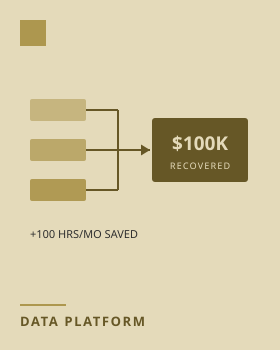

Program & Financial Data Integration Platform
Program, financial, and operational data lived in disconnected systems, leaving leadership without a single reliable source of truth and hiding broken business processes behind manual reporting. Led the design and rollout of a governed data integration and BI platform: automated pipelines from project-tracking, timekeeping, and cost systems into a business intelligence layer, certified datasets with data governance and access controls, persona-based dashboards for finance and budget leadership, dev/test/prod environments, and a support ticketing system and user guide to drive adoption. Surfaced revenue that manual reporting had been leaving on the table, and removed a recurring monthly data-entry burden from a large population of managers.